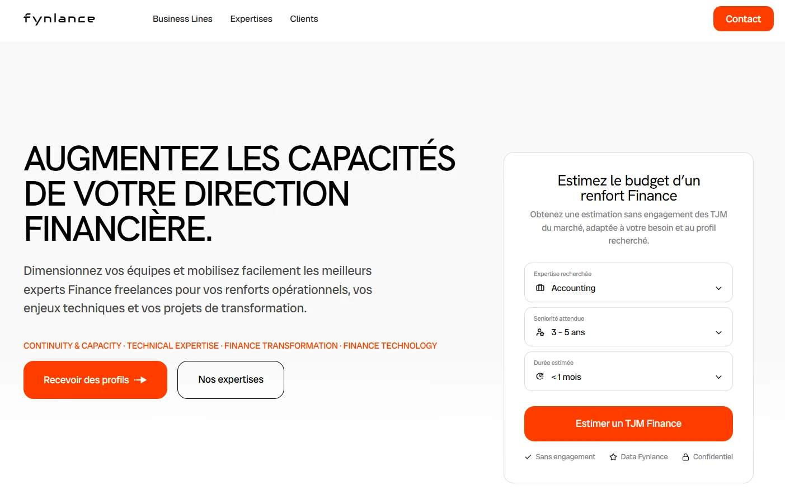
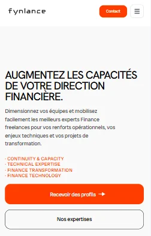
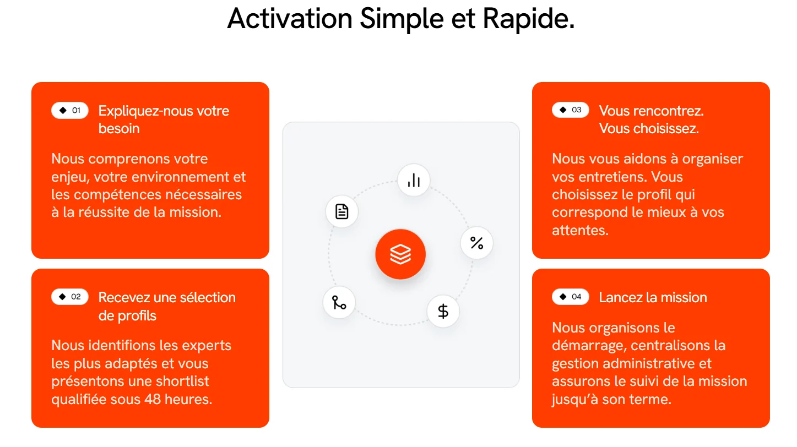

Responsive translation
The supplied visual system was rebuilt around fluid layouts and content priorities rather than fixed desktop compositions.
05 / Webflow development
A conversion-focused Webflow build that makes specialist finance staffing feel immediate, credible, and easy to act on.
View live website ↗Overview
Fynlance connects finance departments with freelance specialists and interim managers. My role was to translate the approved visual direction into a dependable Webflow experience, structure a broad service offer clearly, and leave the team with practical control over content after launch.
Live interface


The development challenge
Serve finance leaders and independent consultants, explain multiple engagement types, and move visitors toward a relevant next step without creating a maintenance burden for the client.
Development approach
The estimator and conversion paths give the experience immediacy, while reusable layouts, structured content, semantic hierarchy, and responsive rules keep the build maintainable and search-ready.
The supplied visual system was rebuilt around fluid layouts and content priorities rather than fixed desktop compositions.
Business lines and expertise pages use clear information architecture, headings, and internal pathways for discoverability.
Reusable Webflow components let the team update offers and proof points without rebuilding the experience.
Process design

Public proof
Private traffic and conversion analytics were not supplied. These are company-stated signals published on the live website.
stated target for presenting a qualified shortlist.
finance specialties organized across the offer.
stated experience in finance recruitment.
Next project